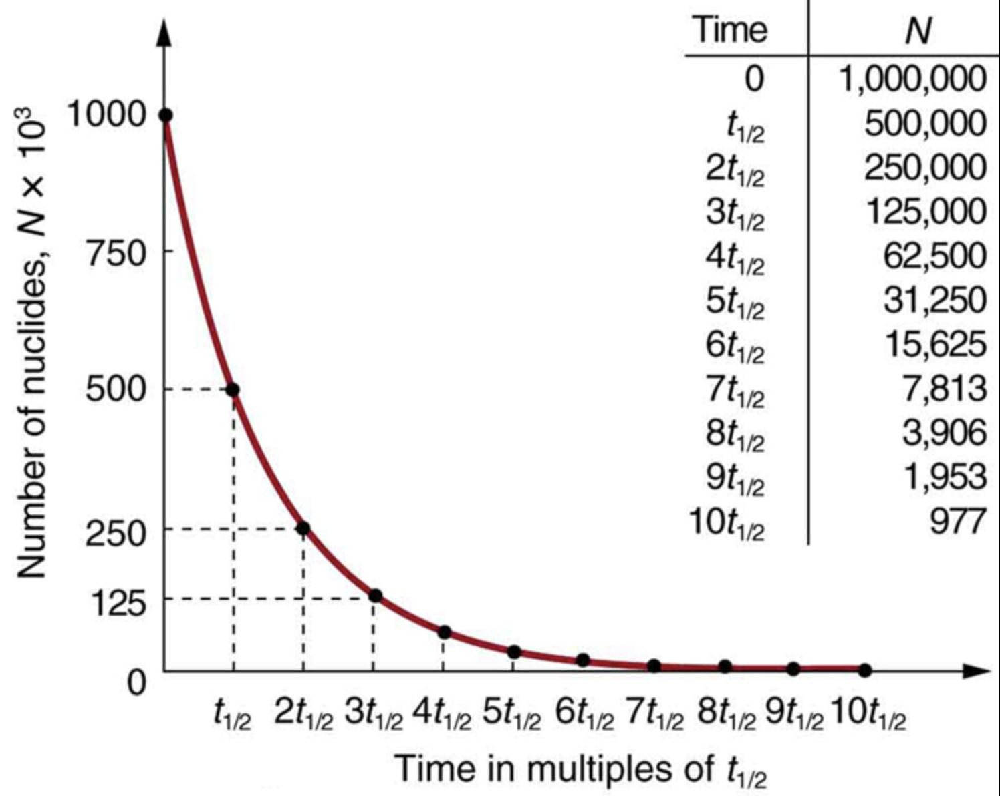

Todo cambia, nada permanece
Ya lo decía Heráclito, gran filósofo de la antigua Grecia. Y es verdad: todo cambia, nada permanece. Eso es lo que le sucede a los átomos radiactivos, que cambian para convertirse en otros elementos, radiactivos o no. La diferencia de unos a otros es cuanto tiempo tardan en cambiar, decimos en desintegrarse. Al tiempo que una población de núcleos radiactivos tarda en reducirse a la mitad, se le llama PERIODO DE SEMIDESINTEGRACIÓN (T1/2) Hay elementos radiactivos como el 238-U cuyo T1/2 es de millones de años, y otros como como el 226-Ra es de 1600 años, otros como 137-Cs es de 30 años, otros como 131-I es de 8 días... Cuanto más pequeño sea ese tiempo antes se desintegran esos elementos, y por tanto dejan de ser peligrosos en sí (siempre que se desintegren en un elemento no radiactivo). Mirad las gráficas.

Curiosamente, los elementos radiactivos como el 238-U, o el 232-Th al tener periodos de semidesintegración de millones de años, tardan mucho en emitir un partícula alfa, beta, o gamma, y salvo que estemos ante concentraciones muy elevadas, no aportan grandes cantidades de radiación a las dosis que recibimos. En cambio los radionucleidos que se desintegran rápido, emiten muchas partículas alfa, beta o gamma en un periodo de tiempo corto (minutos, días, meses, algunos años), y por tanto son potencialmente muy peligrosos radiactivamente hablando.